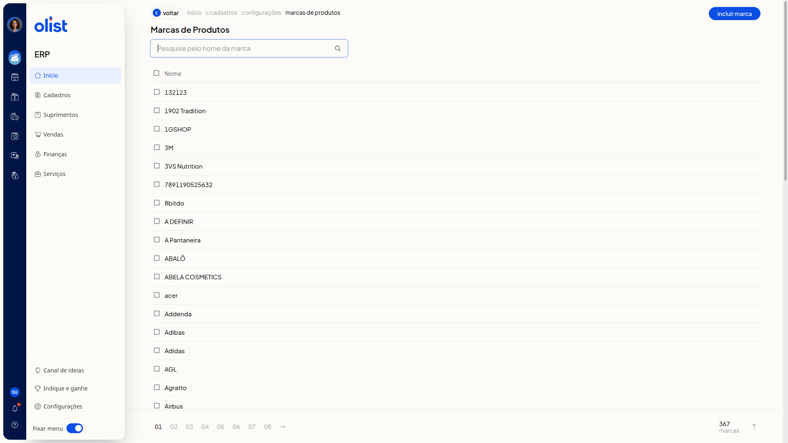
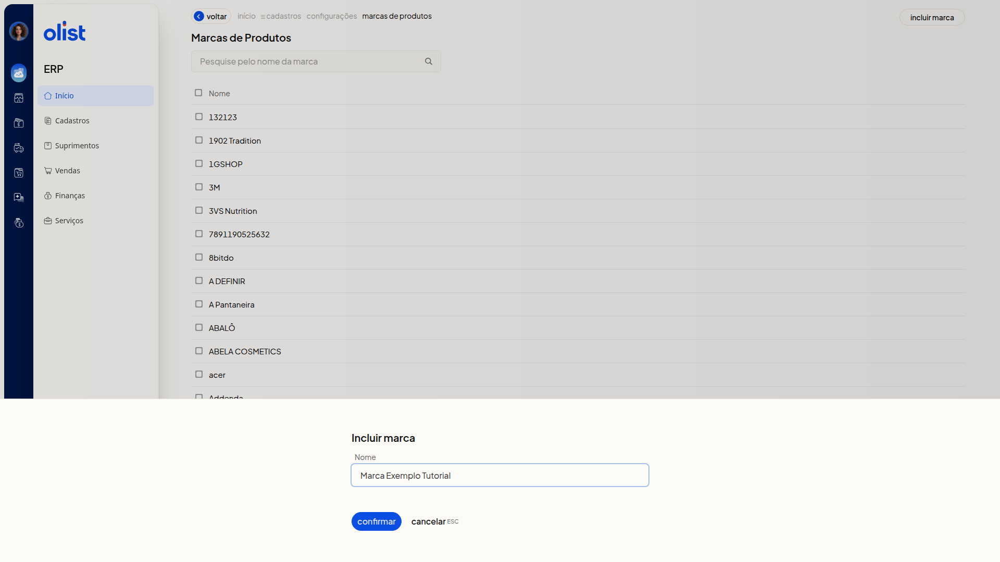
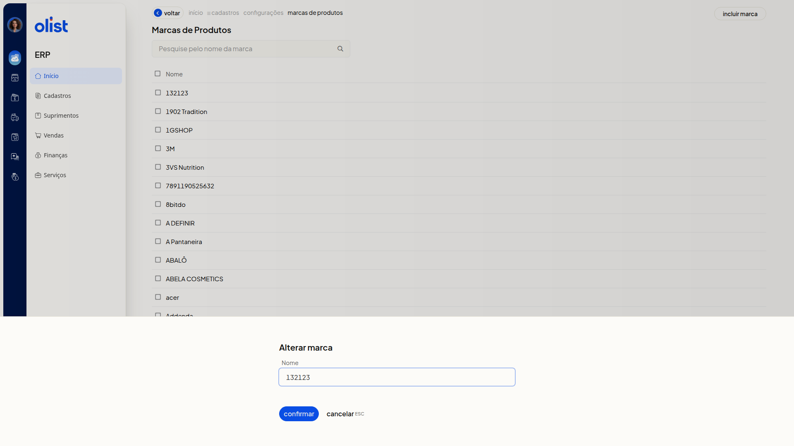

Marcas dos Produtos - Configurações
No ERP da Olist, a opção Configurações de marcas de produtos abre a lista Marcas de Produtos. Você pesquisa uma marca pelo nome, inclui uma marca ou altera o nome de uma marca já listada, para manter os nomes atualizados.
Importante
Apenas quem tem permissão para configurar marcas de produtos acessa esta tela.
Informe o nome para incluir ou alterar uma marca. Não é possível incluir ou alterar uma marca usando um nome já cadastrado.
Como acessar
No menu lateral, acesse Configurações > Configurações ERP > Cadastros > Configurações de marcas de produtos.
Pré-requisitos
- Você precisa estar autenticado no ERP, com o menu Configurações e a opção Configurações ERP disponíveis.
- Você precisa de permissão para configurar marcas de produtos.
Grupos de configuração
Marcas de Produtos
A lista reúne as marcas na coluna Nome e pode ter mais de uma página.
- Pesquise pelo nome da marca: localize uma marca pelo nome.
- Incluir marca: inicia a inclusão de uma marca.
- Nome: mostra o nome de cada marca. Clique no nome para alterar a marca.

Incluir marca
Clique em Incluir marca.
- Nome: informe o nome da marca.

- Confirmar: conclui a inclusão.
- Cancelar (ESC): fecha a inclusão e volta à lista Marcas de Produtos, sem incluir a marca informada.
Alterar marca
Na lista Marcas de Produtos, clique no nome da marca na coluna Nome. O campo Nome aparece preenchido com o nome atual. Ajuste o texto se necessário.

- Confirmar: salva a alteração.
- Cancelar (ESC): fecha sem confirmar a alteração.
Links relacionados
Se precisar de ajuda com esta configuração, fale com o suporte.